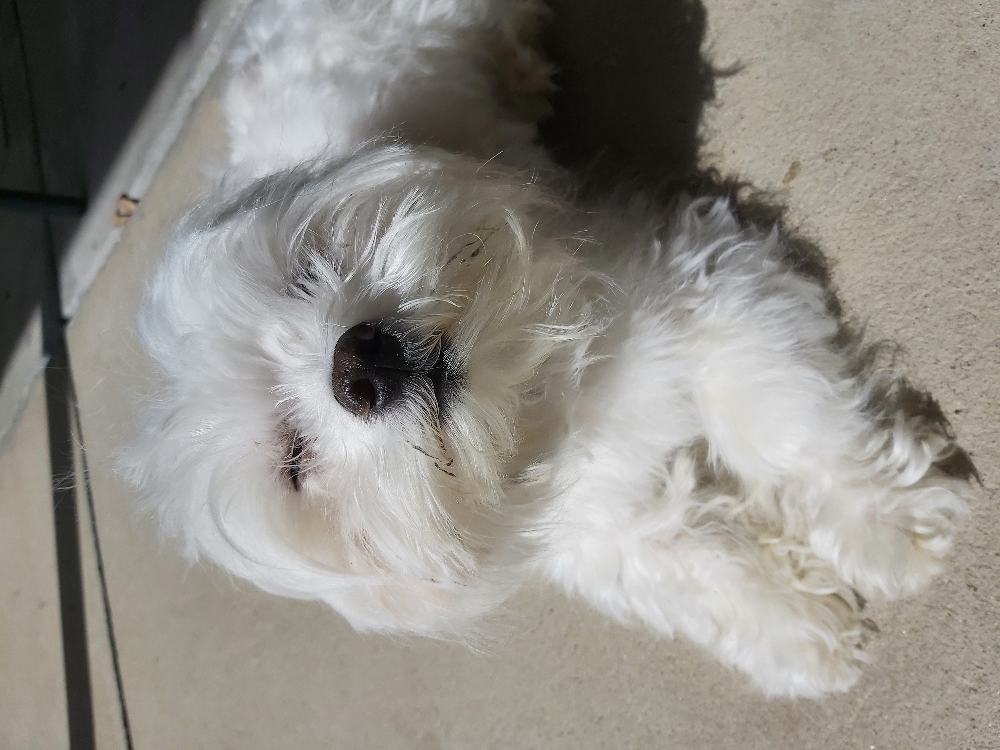

Moja najdraža životinja
Moja najdraža životinja je pas. Pas (Canis lupus familiaris) je udomaćeni potomak sivog vuka. Pas je prva udomaćena životinja, te je čovjekov najbolji prijatelj već 14 000 godina. Na svijetu postoji 700 milijuna do 1 milijarde pasa. Osim što su kućni ljubimci, psi ispunjavaju mnoge uloge poput lova, vuče, pomaganja slijepima i slabovidnima te asistiranja policiji i vojsci.

Karakteristike
- Psi znatno variraju u visini i masi, ovisno o pasmini: od njemačke doge visine 70-80 cm i mase 50-80 kg, sve do čivave visine 13-20 cm i mase 0.5-3 kg.
- Na svijetu postoji preko 340 psećih pasmina.
- Ono što je ipak zajedničko svim psima jest da imaju vrlo dobar sluh i njuh, te nešto lošiji vid u odnosu na ljude.
- Gotovo svi psi imaju dlaku, a ona znatno varira u dužini i boji te može biti jednoslojna ili dvoslojna. Dlaka psima služi za regulaciju temperature.
- Prosječan život psa traje 12.7 godina.
Dodatne informacije
Dodatne informacije o psima mogu se pronaći na sljedećim web-stranicama: